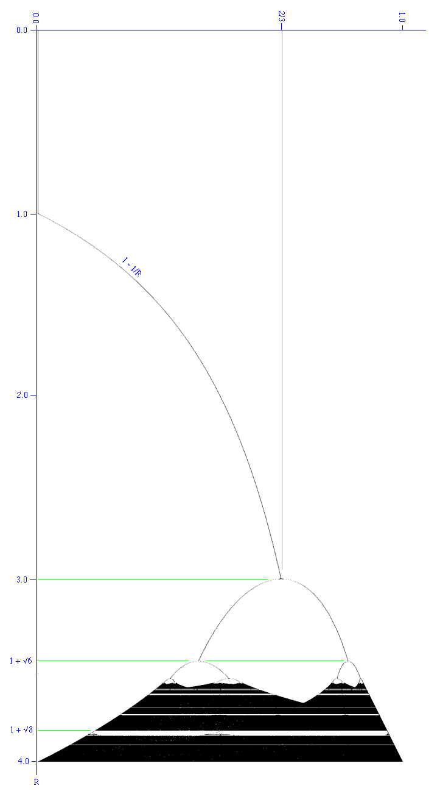
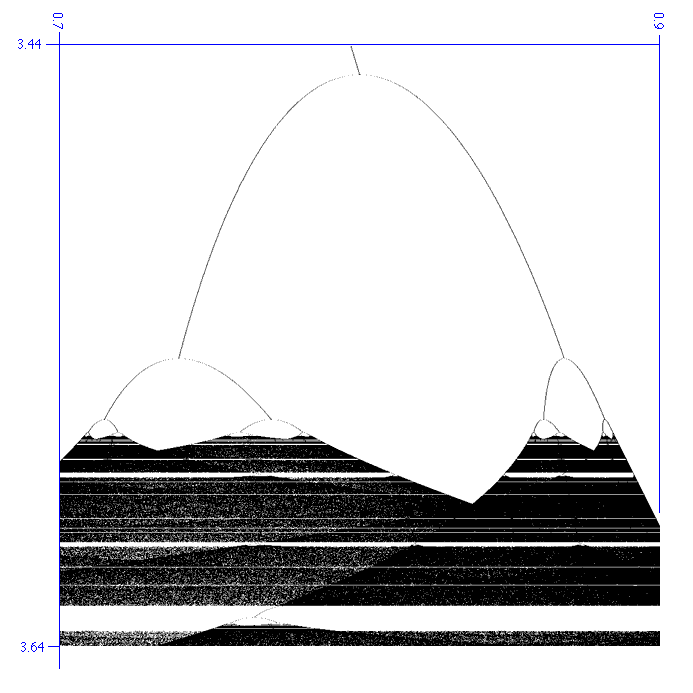

Logistic Equation and
Bifurcation Diagram
Written by Paul Bourke
September 1993
Sample C code: graph.c
Contribution by Adam Majewski: diag.c
Contribution by Tim Meehan (2003): logistic_map.py
Updated (2014): logistic.py
The standard form of the so called "logistic" function is given by
f(x) = R x (1 - x)
Where R is called the growth rate when the equation is being used
to model population growth in an animal species say.
It was popularised by a review article written by Robert May in 1976
as an example of a very simple non-linear equation being able to produce
very complex dynamics.
When used to create a series
An+1 = R An (1 - An)
This series behaves in one of the following ways depending on the value of R,
the initial conditions don't matter (within reason).
- Extinction (Uninteresting fixed point)
If the growth rate R is less than 1 the system "dies", An -> 0.
- Fixed Point
The series tends to a single value. How it reaches this value is not
important but generally it oscillates about the fixed point but unlike
a mass spring system, the series generally tends to rapidly approach
fixed points. In the bifurcation diagram below the system can be seen
to tend to fixed points for 1 < R < 3.
- Periodic
The series jumps between two or more discrete states. In the bifurcation
diagram below it can be seen that the system alternates between 2 states
after R = 3. After about 3.44948 (1 + sqrt(6))
the system alternates between 4 states.
Notice the system jumps between these states, it does not pass through
intermediary values. The number of states steadily increases in a process
called period doubling as R increases. For example at 3.5441 until
3.5644 there are 8 states. Between 3.5644 and 3.5688 there are 16 states.
- Chaotic
In this state the system can evaluate to any position at all with no
apparent order. In the bifurcation diagram below, the system undergoes
increasingly frequent period doubling until it enters the chaotic regime
at about 3.56994. Below R = 4 the states are bound between (0,1), above
4 the system can evaluate to (0,infinity).
Amongst this chaos a 3 period surprisingly appears between about
3.8284 (1 + sqrt(8)) < R < 3.8415.
The following is known as a bifurcation diagram, it shows the values
the system (series) evaluates to for different values or R. In practice
this diagram is generated by choosing a random initial value in the range
(0,1) and evaluating the first N terms of the series for a suitably large
value of N (say 1000). At this point the system is considered to have
settled down and the next M terms of the series are plotted, again for
a suitable large M (say 10,000).

Zooming in to show the period doubling more clearly.

A particularly interesting feature of period doubling is the ratio
between consecutive period doubling intervals,
it is a constant known as the
Feigenbaum number.
Feigenbaum number =
4.66920 16091 02990 67185 32038 20466 20161 72581 85577 ....
|